THIS IS A WORK IN PROGRESS!
This is meant for players who have installed and successfully ran the game, and want to learn more about the mechanics and features to gain an edge on the battlefield.
If you are looking for an installation guide, check these:
Try to avoid killing your teammates. If it happens to you unintentionally, it is common courtesy to apologize to the person(s) you killed.
Wait for your teammates if you are driving an APC, car, truck, or transport plane. There is a good chance your teammates want a ride too, and you will have a better shot at surviving if you move together in force. Sometimes vehicles are very limited, and will not respawn for a period of time.
IMPORTANT: If a player is teamkilling or trolling you, DO NOT do a revenge teamkill, but report him to the admins with the !r command. Admins are not all-knowing, and if they see you do a revenge teamkill without knowing about the context, they might ban your ass instead!
!shownext: What map will be played next!admins: Which admins are online?!r PLAYER REASON: Report a player to the admins, e.g.:!r noobslayer9000 teamkilling| Icon | Name | Description |
|---|---|---|
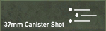 |
Canister shot | Giant Shotgun, short ranged, for soft targets |
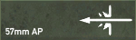 |
Armor Piercing (regular) | Anti Tank/Vehicles, lots of Ammo. Useless against infantry |
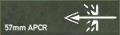 |
Armor Piercing (special) | Stronger Anti Tank, limited. Useless against infantry |
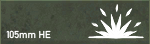 |
High Explosive | Explosive, for soft targets, big splash damage |
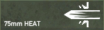 |
HEAT High Explosive AT (shaped charge) | Strong Antitank, slight splash damage, medium range due to arced trajectory |
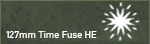 |
Timed HE (Airburst) | Airburst Explosion, for Anti-Aircraft |
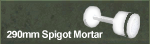 |
Spigot Mortar HE (huge HE) | Short-ranged, very powerful Explosive, giant splash damage, breaches some fortifications |
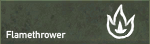 |
Flamethrower | Fire, massacres infantry |
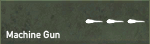 |
Heavy Machinegun | Very Heavy MG, can kill Trucks, APCs and some light Tanks |
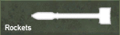 |
Rockets | Antitank rockets, usually launched from Airplane |
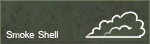 |
Smoke | Big cloud of smoke |
FH2 uses a fake sway animation (bullets still come out from the center of the screen) so don’t aim where the iron sights are. You need to aim at the center of the screen. To fight the fake sway, instead of aiming a target for like 10 seconds just unzoom and zoom back the iron sights will be set back to the center of the screen, then you shoot where they aim.
-If you are an infantry soldier and you go prone, you cannot aim correctly for the first few seconds. This is done to avoid dolphin diving. So lay down, wait till your crosshair becomes smaller, then aim and return fire. Additionally, you can also crouch to get off a quick, accurate shot.
There is no parachute for the normal soldier. All pilot kits have one, and can be found most commonly somewhere near an airfield. The only exceptions to this are airborne maps. If you see a kit in the spawn-screen, with a parachute icon next to it, then it too has a parachute.
To open the chute press 9 twice. You must open the chute high enough to avoid any injuries. If you open it 10m before you hit the ground, you will die.
Some weapons require that you go prone before using them. These include some light machineguns and both anti-tank and anti-personal mines.
You will notice that the recoil of infantry weapons is considerably higher than in normal Battlefield 2. In BF2 your gun has almost no recoil, but the bullets you shoot hit in a large area around the point you are aiming. In Fh2 all bullets hit exactly where you point the gun, but there is considerable recoil that will throw you off target. You can balance out this recoil by moving the mouse in the opposite direction while shooting. The amount and direction of recoil is different depending on caliber and weight of the gun, so it takes some practice to get it right. However, with some experience you will be able to easily get several shots on target.
If you get wounded you have to use your first aid kit. You will notice a injury when cannot sprint anymore and that you get a grey view. You activate your first aid kit by throwing it on the ground, and standing on it. You will notice a cross symbole on the right side of your screen. It takes a while till you are completly healted. During the time you are wounded your minimap will loose the symbols, and you cannot sprint.
A tank is a valuable asset to any team, and has the most armor of any vehicle on the battlefield. In order to successfully complete an attack, a tanker should move his tank so that he can cover any infantry around him. Additionally, infantry should try to take out any anti-tank positions before it can destroy the tank.
-Aiming in tanks is done by pressing the “x” key. -Press “Ctrl” and move your mouse to look around when looking outside the cupola of a tank.
TODO Images
Tanks have different types of ammo (see below). To change them use your mouse wheel. -AP: Standard anti-tank shell. Best used against armored targets, as this shell has nearly no explosive power. -HE: Stands for high-explosive. This shell is best used against soft-skin targets such as trucks and jeeps. It is also effective for dealing with infantry and the gunners of anti-tank guns. -HEAT: This shell type is a special anti-tank shell that also explodes on contact. -Special Shells: Most tanks and tank-destroyers in FH2 also have some form of special shells. These are usually extremely limited in quantity (2-3 per tank), but are even more effective at destroying enemy tanks than normal AP shells. Examples include: HVAP, Pz.Gr. 40, APCBC, and APDS. -Smoke: There are two types of smoke in FH2. Most tanks have deck smoke, which when fired, will deploy a smoke cloud from the rear of the tank. However, most of the US tanks, have smoke shells, which operate like a normal tank shell, but will produce a large cloud of smoke upon impact.
-As a pilot, you serve as forward recon for your team. Be sure to announce the location of any enemy movement you see to better help your teammates on the ground.
-Remember to pickup a pilot kit before you take-off. If you don’t and you need to bail out, you won’t have a parachute.
-Some aircraft have more than 2 weapons. This could be additional cannons, or even rockets and bombs. To select these, either press the “F” key, or cycle through them using the mouse wheel.
This page’s content is not my own creation, but rather a compilation of existing tutorial, guides and tips written by other people over the course of many years.
(incomplete) Credits: - IrishReloaded - TS4Ever
how do i look around in tank how do I change the target when I’m artillery when there are many? MAP LOADING SONGS